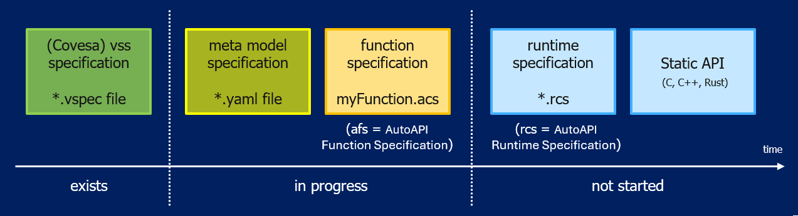

Current status of the project:

Function Specification File#
A Function Specification File describes a single function and how that function uses the interface concepts defined by the metamodel. It contains function-specific configuration information, such as interface direction, protection requirements, parameters, scheduling, and supervision. It should not evolve into a second semantic catalogue.
Catalogue/interface metadata, function-specific configuration, and runtime information shall remain clearly separated:
Catalogue/interface semantics: canonical VSS signals and parameters, or approved extensions, that define the meaning of data and parameters.
Function-specific configuration: how a specific function uses those interfaces, including input/output direction, protection requirements, scheduling, and the selected supervision mechanisms.
Runtime information: actual runtime values and status information, such as data quality,
FunctionResult, transport or runtime failures, and function-specific diagnostic status.
The Function Specification should primarily reference and reuse catalogue-defined semantics rather than redefining the same metadata independently. If metadata must be included directly in the Function Specification for code generation or tooling purposes, it shall remain clear which information originates from the catalogue and which information belongs to function-specific configuration.
A Function Specification File describes exactly one function. It does not define the system-level composition of multiple functions. Dependencies on runnables from other functions may be referenced; however, the complete composition is defined in the Runtime Specification File.
About the naming#
In our documentation, we deliberately use the term Function (for example, Function Specification File and Function Adapter) because alternative terms, such as Component, Application, or Module, often carry established meanings in different frameworks and toolchains.
In this context, a Function represents a self-contained unit of functionality that encapsulates application or algorithmic logic (for example, MATLAB-generated code) and exposes it through a middleware-independent interface. Where required, a wrapper or adapter may be used to connect this logic to the underlying middleware or runtime environment. The term is intentionally generic and can be used to describe a wide range of functional implementations, including:
Vehicle Function
Diagnostic Function
Control Function
Analysis Function
Calculation Function
Signal Processing
Data Processing
Estimation Function
Monitoring Function
Simulation Function
Therefore, the term Function should be understood as a generic abstraction for algorithmic functionality rather than as a specific software architectural concept.
Catalogue and VSS reuse#
Existing VSS nodes shall be reused whenever their semantics match the required interface. New Vehicle.* paths shall only be introduced when no suitable VSS node exists. Such additions shall be explicitly identified as approved extensions and shall not be presented as standard VSS catalogue entries.
Parameter identifiers shall follow the same VSS-style hierarchical naming convention as all other catalogue interfaces. Existing catalogue entries shall be reused whenever available. If no suitable entry exists, the parameter shall be introduced as an explicitly approved extension within the relevant Vehicle.<Domain>... semantic branch rather than under a standalone function-specific namespace.
Content Of Function Specification File#
The metamodel defines mandatory properties within the interface types. However, it does not currently define collection-level cardinalities for every Function Specification File. Therefore, the presence of collections described below is provided as guidance rather than as a metamodel requirement.
Property / Attribute |
Presence |
Description |
Example / Notes |
|---|---|---|---|
|
As needed |
Data interfaces used by the function. Reuse canonical VSS/catalogue semantics where available. |
|
|
As needed |
Calibration/configuration values identified through VSS-style catalogue or approved extension paths. |
|
|
Optional / candidate |
Candidate function-specific diagnostic interfaces, separate from generic |
|
|
As needed |
Runnable lifecycle, activation, timing and execution contract. |
|
|
Inside scheduling |
Per-runnable execution supervision. |
|
Scheduling notes#
cycleTimeMs is only applicable to runType: cyclic and shall be omitted for init, event and terminate unless the metamodel is explicitly changed.
previousRunnableRef is optional. It references a runnable that must precede the current runnable when an explicit ordering constraint exists. It does not mean that the referenced runnable must execute immediately before the current runnable.
Runnable names follow the current metamodel convention <FunctionName>.Init, <FunctionName>.Step and <FunctionName>.Terminate. If preprocessing is independently scheduled, it shall be represented as a separate function/runnable, for example WheelSpeedPreProcessor.Step, and referenced through previousRunnableRef and/or logical supervision.
Runtime quality#
Runtime quality is associated with a Data interface and shall be indicated explicitly in the Function Specification as a runtime companion interface. For example, Vehicle.Speed.Qualifier is identified as an enum-based runtime signal using DataQuality. It is not modeled as a normal Data interface and therefore does not repeat static Data properties such as min, max, defaultValue, resolution or precision. The qualifier remains associated with its parent Data interface through runtimeCompanion.qualityCode.
FunctionResult and Error#
FunctionResult describes the generic runtime execution outcome contract. A static Function Specification shall therefore describe the result type rather than hard-code a value such as executionResult: success. The runtime instance carries success, failure or notAvailable.
errorInterfaces represents the candidate/provisional Error concept and remains subject to partner alignment/review within Eclipe and Shift2SdV projects and may evolve based on feedback. Example values for severity, maturation, dependencies, fallback behavior and safety reactions shall be requirement-based or explicitly identified as illustrative.
Template Version 0.0.1
1# *******************************************************************************
2# Copyright (c) 2026 ZF Friedrichshafen AG
3#
4# See the NOTICE file(s) distributed with this work for additional
5# information regarding copyright ownership.
6#
7# This program and the accompanying materials are made available under the
8# terms of the Apache License Version 2.0 which is available at
9# https://www.apache.org/licenses/LICENSE-2.0
10#
11# SPDX-License-Identifier: Apache-2.0
12#
13# Contributors:
14# Thomas Pfleiderer - Function specification added
15# Saran Gundlapalli - autoapiframework_function_specification_template_V01.afs.yaml updated according to metamodel v0.4.0
16# *******************************************************************************
17#
18# TEMPLATE - Function specification File (*.acs)
19#
20# Copy this file, rename it to <YourFunctionName>.acs and fill it in.
21# Every "row" below is one signal/parameter/runnable and MUST provide exactly
22# one value per entry listed under "columns", in the same order.
23# Remove this header and all "# <-- ..." hints once the file is filled in.
24# Unknown metadata shall remain null/omitted as allowed by the consuming schema;
25# do not invent plausible values only to complete an example.
26
27functionSpecification:
28 name: <YourFunctionName> # e.g. SpeedHazardDetection
29 version: 1.0.0 # semantic version of this function specification
30 metaModelRef:
31 name: Eclipse-autoapiframework-Metamodel
32 version: 0.4.0 # meta model version this file was written against
33
34 description: >-
35 <One or two sentences describing what this function does.>
36
37# -----------------------------------------------------------------------
38 # 1) DATA INTERFACES
39 # Reuse canonical VSS paths whenever equivalent semantics already exist.
40 # New Vehicle.* paths shall only be introduced as explicitly approved
41 # extensions when no suitable standard VSS node exists.
42 #
43 # Function-specific properties:
44 # direction: input | output
45 # protection: none | complement | other
46 #
47 # FuSa: true | false
48 # ASIL is optional and should be provided when the data interface is
49 # safety-relevant. Do not populate ASIL mechanically for FuSa: false.
50 #
51 # qualityCode is runtime companion information associated with the Data
52 # interface. The qualifier shall be indicated explicitly as a runtime
53 # enum interface, but shall not repeat normal Data metadata such as
54 # min/max/default/resolution/precision.
55 # -----------------------------------------------------------------------
56 dataInterfaces:
57 - name: Vehicle.<Domain>.<Signal>
58 direction: input
59 dataType: float
60 description: <Functional meaning of the signal.>
61 unit: <unit>
62 min: <min>
63 max: <max>
64 defaultValue: <defaultValue>
65 resolution: <resolution>
66 precision: <precision>
67 FuSa: true
68 ASIL: <QM|A|B|C|D>
69 minUpdatePeriodMs: <minUpdatePeriodMs>
70 accuracy: <expected accuracy>
71 protection: none
72 runtimeCompanion:
73 qualityCode:
74 name: Vehicle.<Domain>.<Signal>.Qualifier
75 datatype: enum
76 enumRef: DataQuality
77
78 # - name: Vehicle.<Domain>.<OutputSignal>
79 # direction: output
80 # dataType: float
81 # description: <Functional meaning of the output signal.>
82 # unit: <unit>
83 # min: <min>
84 # max: <max>
85 # defaultValue: <defaultValue>
86 # resolution: <resolution>
87 # precision: <precision>
88 # FuSa: false
89 # minUpdatePeriodMs: <minUpdatePeriodMs>
90 # accuracy: <expected accuracy>
91 # protection: none
92
93 # -----------------------------------------------------------------------
94 # 2) PARAMETERS:
95 # Parameter identifiers shall also follow the VSS-style hierarchical
96 # Vehicle.<Domain>.<Subdomain>.<Parameter> naming approach. Reuse an
97 # existing catalogue entry where available; otherwise use an explicitly
98 # approved extension under the relevant semantic branch.
99 # dimensions is optional and only needed for array/map parameters,
100 # e.g. [10] for a vector or [7, 10] for a 7x10 map.
101 # -----------------------------------------------------------------------
102 parameters:
103 - name: Vehicle.<Domain>.<Parameter>
104 dataType: float
105 defaultValue: <defaultValue>
106 description: <Meaning and intended usage of the parameter.>
107 unit: <unit>
108 tunable: false
109 min: <min>
110 max: <max>
111 dimensions: [<size>]
112
113 # -----------------------------------------------------------------------
114 # 3) ERROR INTERFACES: - CANDIDATE / PROVISIONAL
115 # Function-specific diagnostic interfaces, separate from FunctionResult.
116 # This concept is still subject to partner alignment/review.
117 # - Naming convention: <FunctionName>.<ErrorName>.ErrorStatus
118 # -----------------------------------------------------------------------
119 # errorInterfaces:
120 # - name: <YourFunctionName>.<ErrorName>.ErrorStatus
121 # dataType: boolean
122 # description: <Meaning of the error and its trigger scenario.>
123 # severity: degraded
124 # maturationTimeMs: <maturationTimeMs>
125 # resetTimeMs: <resetTimeMs>
126 # resetCondition: <Condition that clears the error.>
127 # dependencyRefs: []
128 # fallbackBehavior: <Function-level fallback/degradation behavior.>
129 # raisesSafetyReactionRefs: []
130
131 # -----------------------------------------------------------------------
132 # 4) SCHEDULING:
133 # - runType: init | cyclic | event | terminate
134 # - Naming convention: <FunctionName>.Init / .Step / .Terminate
135 # - previousRunnableRef: name of the runnable that must run right before
136 # this one (use System.Startup for the very first runnable).
137 # - executionResult: success | failure | notAvailable
138 # - supervision.required: false, or true with one or more of the
139 # supervision.type values below (alive | deadline | logical), each
140 # configured via its matching alive/deadline/logical object.
141 # - schedulingPolicy and stackSizeBytes are optional.
142 #
143 # cycleTimeMs is present only for runType: cyclic.
144 # previousRunnableRef is optional and is used only when an explicit
145 # predecessor/order dependency exists. It does not mean "immediately
146 # before".
147 #
148 # executionResult describes the runtime result contract. The static
149 # specification shall not hard-code success/failure/notAvailable.
150 # -----------------------------------------------------------------------
151 scheduling:
152 - functionName: <YourFunctionName>.Init
153 runType: init
154 description: <Initialize internal states.>
155 implementedASIL: QM
156 executionResult:
157 type: FunctionResult
158 supervision:
159 required: false
160
161 - functionName: <YourFunctionName>.Step
162 runType: cyclic
163 description: <Evaluate inputs and calculate outputs.>
164 cycleTimeMs: <cycleTimeMs>
165 implementedASIL: QM
166 # previousRunnableRef: <OtherFunction>.Step
167 executionResult:
168 type: FunctionResult
169 supervision:
170 required: false
171 # supervision:
172 # required: true
173 # type:
174 # - alive
175 # - deadline
176 # - logical
177 # alive:
178 # minIndications: <minIndications>
179 # maxIndications: <maxIndications>
180 # referenceCycleMs: <referenceCycleMs>
181 # deadline:
182 # minExecutionTimeMs: <minExecutionTimeMs>
183 # maxExecutionTimeMs: <maxExecutionTimeMs>
184 # logical:
185 # predecessorRefs: []
186 # successorRefs: []
187 # schedulingPolicy: <e.g. preemptive/non-preemptive>
188 # stackSizeBytes: <stackSizeBytes>
189
190 - functionName: <YourFunctionName>.Terminate
191 runType: terminate
192 description: <Shutdown cleanup.>
193 implementedASIL: QM
194 previousRunnableRef: <YourFunctionName>.Step
195 executionResult:
196 type: FunctionResult
197 supervision:
198 required: false
What needs to be added for the SpeedHazardDetection example:
1# *******************************************************************************
2# Copyright (c) 2026 ZF Friedrichshafen AG
3#
4# See the NOTICE file(s) distributed with this work for additional
5# information regarding copyright ownership.
6#
7# This program and the accompanying materials are made available under the
8# terms of the Apache License Version 2.0 which is available at
9# https://www.apache.org/licenses/LICENSE-2.0
10#
11# SPDX-License-Identifier: Apache-2.0
12#
13# Contributors:
14# Thomas Pfleiderer - Function specification added
15# Saran Gundlapalli - autoapiframework_function_specification_example.afs.yaml updated according to metamodel v0.4.0
16# *******************************************************************************
17
18functionSpecification:
19 name: SpeedHazardDetection
20 version: 1.0.0
21 metaModelRef:
22 name: Eclipse-autoapiframework-Metamodel
23 version: 0.4.0
24
25 description: >-
26 Detects rapid acceleration and requests hazard warning lights if the
27 configured threshold is exceeded.
28
29 dataInterfaces:
30 - name: Vehicle.Speed
31 direction: input
32 dataType: float
33 description: Current vehicle speed value.
34 unit: km/h
35 min: 0.0
36 max: 300.0
37 defaultValue: 0.0
38 resolution: 0.1
39 precision: 1
40 FuSa: true
41 ASIL: B
42 minUpdatePeriodMs: 10
43 accuracy: "+/-0.2 km/h"
44 protection: complement
45 runtimeCompanion:
46 qualityCode:
47 name: Vehicle.Speed.Qualifier
48 datatype: enum
49 enumRef: DataQuality
50
51 # Each Data interface explicitly indicates its runtime quality companion.
52 # The qualifier is an enum-based runtime interface and intentionally does not
53 # duplicate normal Data properties such as min/max/default/resolution.
54
55 - name: Vehicle.Acceleration.Longitudinal
56 direction: input
57 dataType: float
58 description: Longitudinal acceleration used to detect strong acceleration events.
59 unit: m/s2
60 min: -20.0
61 max: 20.0
62 defaultValue: 0.0
63 resolution: 0.01
64 precision: 2
65 FuSa: true
66 ASIL: B
67 minUpdatePeriodMs: 10
68 accuracy: "+/-0.05 m/s2"
69 protection: complement
70 runtimeCompanion:
71 qualityCode:
72 name: Vehicle.Acceleration.Longitudinal.Qualifier
73 datatype: enum
74 enumRef: DataQuality
75
76 # Existing VSS semantics shall be reused where available. If the selected
77 # VSS release does not provide an equivalent hazard-light request node,
78 # this path must be treated/documented as an conceptual extension that follows
79 # VSS canonical naming.
80 - name: Vehicle.Body.Lights.Hazard.Request
81 direction: output
82 dataType: boolean
83 description: True requests activation of hazard warning lights.
84 unit: boolean
85 min: 0
86 max: 1
87 defaultValue: false
88 resolution: 1
89 precision: 1
90 FuSa: true
91 ASIL: B
92 minUpdatePeriodMs: 20
93 accuracy: logical
94 protection: complement
95 runtimeCompanion:
96 qualityCode:
97 name: Vehicle.Body.Lights.Hazard.Request.Qualifier
98 datatype: enum
99 enumRef: DataQuality
100
101
102 parameters:
103 - name: Vehicle.Chassis.SpeedHazardForward
104 dataType: float
105 defaultValue: 10.0
106 description: >-
107 Relative speed increase threshold in percent for triggering
108 hazard request while driving forward.
109 unit: percent
110 tunable: false
111 min: 0.0
112 max: 100.0
113
114 - name: Vehicle.Chassis.HazardRequestDurationMs
115 dataType: uint32
116 defaultValue: 3000
117 description: Hold time for hazard request after trigger.
118 unit: ms
119 tunable: false
120 min: 0
121 max: 600000
122
123
124
125 scheduling:
126 - functionName: SpeedHazardDetection.Init
127 runType: init
128 description: Initialize internal states and latched outputs.
129 implementedASIL: B
130 executionResult:
131 type: FunctionResult
132 supervision:
133 required: false
134
135 - functionName: SpeedHazardDetection.Step
136 runType: cyclic
137 description: Evaluate inputs and calculate hazard request output.
138 cycleTimeMs: 20
139 implementedASIL: B
140 previousRunnableRef: SpeedHazardDetection.Init
141 executionResult:
142 type: FunctionResult
143 supervision:
144 required: false
145
146 - functionName: SpeedHazardDetection.Terminate
147 runType: terminate
148 description: Shutdown cleanup for deterministic deactivation.
149 implementedASIL: QM
150 previousRunnableRef: SpeedHazardDetection.Step
151 executionResult:
152 type: FunctionResult
153 supervision:
154 required: false